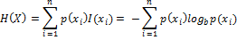
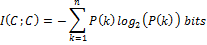
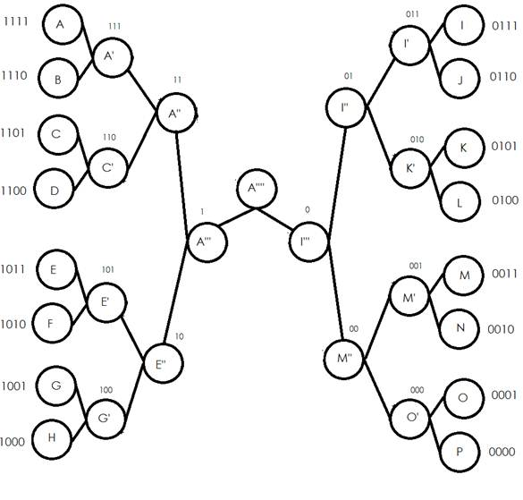
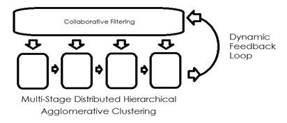

A Binary Republic
Maximizing information and minimizing confusion with a binary tree.
Charles Short
Abstract: A binary republic which leverages the mathematical properties of a binary tree would be the best value for citizens. Submitted is a simple proof based on the observed limitations of human intelligence and Claude Shannon's widely accepted definition of information entropy.
Keywords: binary tree, information entropy, e-government, social networks, collective intelligence, collaborative filtering.
Acknowledgement: acknowledgement of Prof. Jing Chen for review and feedback.
imple decisions require a bit of free energy. Complicated decisions require more free energy. The fundamental problem of authority is to make decisions. Making decisions involves risk, uncertainty, i.e. entropy. In information theory, entropy is a measure of the uncertainty associated with an unknown variable. A decision is the resolution of an unknown variable.
One aim of open government is to enable any citizen to get involved in the decision making process. Opening the door to any citizen brings both good and bad. The good is more data. Feedback from everyone means more information on everything. The bad is more data. An overflow of data is simply confusing. To extract value from more data, an open government must be engineered to minimize information entropy.
The probability of a difference in opinion increases with group size. A difference in opinion decreases the probability that the group will follow a particular opinion. Hence the leading opinion is an unknown variable in the decision making process. The Shannon entropy H of a discrete random variable X = {x1, x2, ..., xn}
Here E is the expectation, and I the information content of X. (Shannon 1951).
I(X) is a measure of the number of bits of information needed to enumerate the probability of the event. Thus, the smaller the probability of an event the greater the self-information contained in the surprise event. If p denotes the probability mass function of X then the entropy can explicitly be written:

With a larger group the number of opinions increases and the probability of coherent action with respect to any particular opinion decreases. Consequently, the minimum group entropy occurs with a group of two. For example, money is used to match two people and reduce entropy. Before money people had to barter. If a person had fish and wanted corn they had to find someone who had corn and wanted fish, or figure out multiple trades with more than 2 people. Money reduces the complexity of trading by acting as a universal matching system.
In traditional political processes people are partitioned into crude geographic clusters and political parties. The self-information of a cluster is determined by the fraction of elements within a cluster (Meila, 2007):

If a group of people are partitioned into two crude clusters such as liberals and conservatives only a bit of information is obtained;
If a group of people are partitioned into more clusters a little more than a bit is obtained:
If a group of people are partitioned into unequal clusters less information is obtained, e.g.:
Traditional political processes partition people into relatively few crude clusters. Furthermore the traditional partitioning process is a potentially corrupted scheme labeled gerrymandering. Gerrymandering is a practice that attempts to establish a political advantage for a particular party or group by manipulating geographic boundaries to create partisan, incumbent-protected districts.
Direct gerrymandering of the political base remains a potent force for oppression but it is subject to some scrutiny. The most insidious gerrymandering occurs in the middle layers of the political power hierarchy. The middle layers of the political power hierarchy are concealed in a fog of social confusion. For example, lobbyists make a living in the fog of social confusion in the middle layers of the political power hierarchy. Sophisticated capitalists actively partition lobbyists, journalists, lawyers and other communication based influencers to establish a political advantage.
An open government will allow people to establish the partitioning criterion of all levels of the political power hierarchy themselves. And a mathematically optimized e-Republic will partition people into a maximum number of equal clusters. Micro clusters of two people maximize the information produced by clustering and minimize the information entropy of each cluster. It is now technologically feasible to perform agglomerative hierarchical clustering according to the individualized preferences of each citizen of a large group.
The Dunbar number is a theoretical limit on the communication capacity of an individual. (Dunbar 1992). Some estimate the number to be as low as 150. (Gladwell 2000).
A group of 150 matches the average person's working memory of 7 objects. However, with sufficient drill people find it possible 'chunk' information and remember 40 binary digits.
'The point is that recoding is an extremely powerful weapon for increasing the amount of information that we can deal with.' (Miller 1956).
A community recodes by selecting representatives. A group of representatives recodes by forming 'super-committees.' Engineers recode information mathematically to optimize data compression, cryptography, error-correction and networks.
One side of the coin is entropy minimization. The other side of the coin is information maximization. Like money, the product is less confusion and greater awareness. A binary code republic selects one representative from every group of two. Just like the initial citizen clustering; if representatives are clustered into groups of 2 then the clustering process produces a maximum amount of information. And on the flip side, a group of 2 minimizes group confusion.
For a not so simple comparison consider the introduction of a Bill under U.S. law. While the idea for a bill can come from anybody, only a member of Congress can introduce a bill in Congress. Congress is partitioned into two bodies. The Senate is easier to comprehend with 101 members. With group entropy of 6.65; members of the Senate do have time for some constituents. However, constituencies are significantly more complex. For example, the 2 Senators from California represent about 38 Million people for group entropy of over 25. The point is that politicians are incapable of directly processing information from their constituents.
The U.S. Congress has a 435 member House and each member of the House represents about 650,000 people. The group entropy of the House is 8.76; which overloads the average human coding capacity of 7.33. But even if every member of Congress is an exceptional human being with the mental capacity to handle more complex groups; the group complexity consumes the mental resources necessary for communicating with the Senate much less constituents.
A binary code dramatically reduces the processing costs so that people can function within their human capacity. For example, a chief representative of 42 million people would need to interact with only 22 intermediate representatives. This would then allow a group of 128 chief representatives to convene in one central processing deliberative body. Each of the representatives would be operating at their capacity of 150 and the system would be tuned for over 5 billion people.
The appropriate tuning for an e-Republic involves a balance between the data rate of intra-group processing, the data rate of inter-group processing, and the channel capacity of the members. There may be an advantage to convening a larger group into one room to discuss an issue: micro-clusters of sized two lend to convenient congress of groups sized 2n .

Figure 1: A binary tree formed from 16 citizens. Larger groups require more information bits.
Computers fundamentally leverage the mathematical properties of a binary tree by using binary numbers to address memory locations. Furthermore the binary search tree is recognized as a fundamental data structure with major advantages for information processing. The major advantage of binary search trees over other data structures is that the related sorting algorithms and search algorithms such as in-order traversal can be very efficient. (Knuth 1997).
Dividing objects into groups has a factorial solution space. For example, there are 137,846,528,820 different ways to partition 40 objects into two groups. This means that evaluating all of the possible ways to group objects becomes impossible for large groups. However, this large solution space also means that many reasonable solutions exist.
Cluster analysis is a very active research subject. Specialists in fields such as medicine, biology, education, genetics, economics and psychology recognized the value of using a computer to organize information. Capitalists recognize the value of clustering people. Facebook and Google use clustering algorithms for news recommendation. (Das 2007). What the internet giants recommend to you is based on what they know about you.
The mathematical advantage of micro clustering is decisive. Moreover, a transparent and personalized clustering process has the profound advantage of informed individualized feedback.
The clustering analysis performed by a physician studying disease or a drug company developing new drugs has a slow feedback loop. An expert must judge the quality of computer partitions by reference to empirical information. The clustering of an e-Republic requires the same type of judgment. But the e-Republic feedback loop involves the subjects of the clustering themselves. Hence, an e-Republic is able to harness the collective intelligence of every citizen by presenting the results of a clustering to each and every user and processing each and every user's feedback. Using citizen feedback the e-Republic then produces a better more informative clustering. This virtuous cycle of distributed feedback and rhythmic reorganization is an information engine.

Figure 2: An information engine cycling between clustering and collaborative filtering.
As an added bonus with no additional cost to the citizen, the optimized e-Republic will also reduce equivocation. In information theory, equivocation is a measure R of the ambiguity received in a signal. (Shannon and Weaver 1949).
H(x) is the entropy of a random variable X and Hy(X) is the entropy of a random variable X given the condition that a second variable Y is known. I.e. what does Y tell us about X. If two people don't speak a common language the equivocation R of a statement is very high. But if two people share expert jargon the equivocation R of a statement is low. Reducing equivocation maximizes the value of expression.
Since the optimized e-Republic will cluster people based on their individual preferences the e-Republic will cluster people who share statistical commonalities. Since statistical commonalities reduce equivocation, the e-Republic will provide each citizen extra value with each cluster by reducing the equivocation in communication. Reduced equivocation results in more effective communication.
Value, like information, has been defined as a reduction in entropy. (Chen 2005). And Nobel Laureate Erwin Schrodinger observes that life maintains itself by feeding on negative entropy. While free energy may be the more accurate term, free energy is a function of entropy. (Schrodinger 1944). A reduction in entropy will result in an increase in free energy, a desirable goal. Micro clustering of citizens offers three value added features: minimized group entropy; maximized cluster information; and reduced cluster equivocation.
Social micro clustering is a technology enabled by the internet and presently being developed by Google, Facebook and others. One path is to clandestinely gerrymander the micro clusters and manipulate the political base with targeted information. The other path is to transparently micro cluster according to the rights and preferences of each citizen and harness the power of feedback. May we ensure the likes of Google and Facebook follow the open path.
References
Chen, Jing. (2002). An Entropy Theory of Value. Social Science Research Network Electronic Paper Collection: http://papers.ssrn.com/abstract=307442
Das, Abhinandan; Mayur Datar; Ashutosh Garg; Shyam Rajaram.(2007). Google News Personalization: Scalable Online
Collaborative Filtering. http://www2007.org/papers/paper570.pdf
Dunbar, R.I.M. (1992). Neocortex size as a constraint on group size in primates. Journal of Human Evolution 22 (6): 469–493. (June 1992). doi:10.1016/0047-2484(92)90081-J
Donald Knuth. (1997). The Art of Computer Programming, Volume 3: Sorting and Searching, Third Edition. Addison-Wesley, ISBN 0-201-89685-0. Section 6.2.2: Binary Tree Searching, pp. 426–458.
Meilă, Marina. (2007). Comparing clusterings—an information based distance” Journal of Multivariate Analysis, Volume 98, Issue 5.
Miller, George A. (1956). "The magical number seven, plus or minus two: some limits on our capacity for processing information". Psychological Review 63 (2): 81–97.
Gladwell, Malcolm. (2000). The Tipping Point – How Little Things Make a Big Difference. Little, Brown and Company. pp. 177–181, 185–186. ISBN 0-316-34662-4.
Shannon, C.; Weaver, W. (1949). The mathematical theory of communication, Urbana: The University of Illinois Press.
Shannon, Claude E. (1951). Prediction and entropy of printed English, The Bell System Technical Journal, 30:50-64.
Schrodinger, Erwin (1944). What is Life – the Physical Aspect of the Living Cell. Cambridge University Press. ISBN 0-521-42708-8.